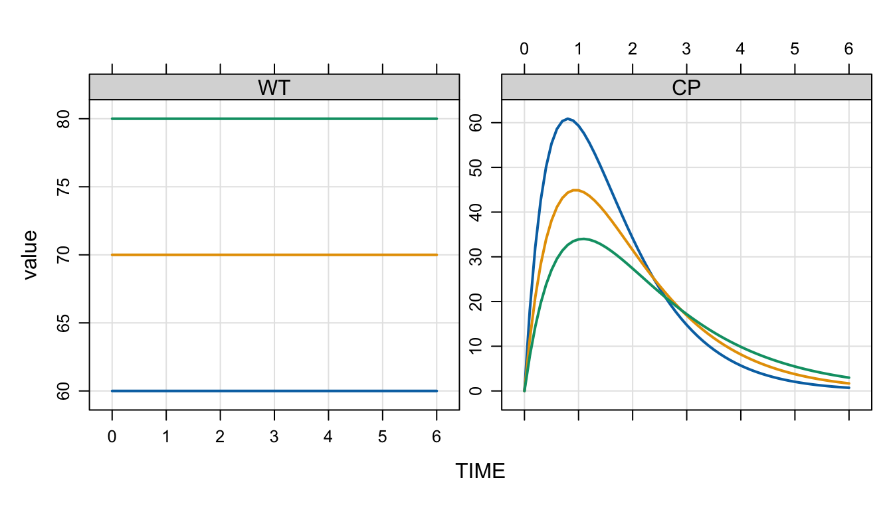

$PARAM
WT = 70, SEX = 0, EGFR = 1009 Model parameters
Model parameters are name / value pairs that are used inside your model, but they can be varied outside the model.
Understanding how mrgsolve handles model “parameters” particularly important for generating interesting and robust simulations.
Big picture
mrgsolvemaintains a parameter list, including names and values- This list is used by default if nothing else is done
- The parameter values in this list can be updated
mrgsolvewill check input data sets for columns which have the same name as a parameter- When a match is made between data set and parameter list,
mrgsolvewill update the value based on what is passed on the data - Parameters in
idataare checked (and parameter list updated) first; after that, the data set is checked (and parameter list updated)
- When a match is made between data set and parameter list,
9.1 Coding model parameters
Traditionally, we’ve used the $PARAM block to set parameter names and values
New in mrgsolve 1.2.0, you can use the $INPUT block. This is another way to specify parameters, but they will have a special tag on them that we can use later.
$INPUT
WT = 70, SEX = 0, EGFR = 100It’s best if you can set these to sensible values; specifically, set to the reference value in your covariate model.
9.2 Updating parameter values
You can’t change the name or number of parameters after you compile the model, but you can change the value.
You can update parameters either
- prior to simulation or
- during simulation
We will illustrate with this model
mod <- mread("parameters.mod", project = here("model"))Building parameters_mod ... done.param(mod)
Model parameters (N=8):
name value . name value
EGFR 100 | THETA3 0.262
SEX 0 | THETA4 0.331
THETA1 0 | THETA5 -0.211
THETA2 3 | WT 70 There parameters are:
WTSEXEGFRTHETA1…THETA5
See model code
$PLUGIN autodec
$INPUT
WT = 70
SEX = 0
EGFR = 100
$PARAM
THETA1 = log(1)
THETA2 = log(20)
THETA3 = log(1.3)
THETA4 = 0.331
THETA5 = log(0.81)
$PK
MU_1 = THETA1 + 0.75*log(WT/70.0) + THETA4*log(EGFR/100.0) + THETA5*SEX;
CL = exp(MU_1 + ETA(1));
MU_2 = THETA2 * 1.00*log(WT/70.0);
V = exp(MU_2 + ETA(2));
MU_3 = THETA3;
KA = exp(MU_3 + ETA(3));
$OMEGA 0.1 0.2 0.5
$PKMODEL cmt = "A1,A2", depot = TRUE
$ERROR
capture CP = A2/V;
$CAPTURE WT CL9.2.1 Update prior to simulation
Use param() to update the model object. You can do this in one of two ways.
9.2.1.1 Update with name=value
The first way is to pass the new value with the parameter name you want to change. To change WT
mod$WT[1] 70mod <- param(mod, WT = 80)
mod$WT[1] 80And when we simulate,
mrgsim(mod) %>% plot("WT")
You can also do this via update()
mod <- update(mod, param = list(WT = 60))
mod$WT[1] 60Remember that mrgsim() passes to update() so you can do the same thing with
out <- mrgsim(mod, param = list(WT = 70))This will generate simulated output with WT set to 70
9.2.2 Update with object
If you have a named object, you can pass that in to the update as well. For example, pass in a named list
p <- list(WT = 70.2, FOO = 1)
mod <- param(mod, p)
mod$WT[1] 70.2Or a data frame
data <- data.frame(WT = c(70, 80.1), BAR = 2)
mod <- param(mod, data[2,])
mod$WT[1] 80.1This will be a very important pattern we’ll do later on
9.3 Update during simulation
In this approach, we’ll add a columns to our input data set with the same names as our parameters and let mrgsolve pick up the new values.
To illustrate, load a data set from which to simulate
data <- read.csv(here("data/parameters-data.csv"))
data ID TIME AMT CMT WT SEX EGFR EVID
1 1 0 100 1 60 0 60 1
2 2 0 100 1 70 0 60 1
3 3 0 100 1 80 0 60 1- Subjects 1, 2, and 3 have different (increasing) weight
- All subjects have
SEX=0 - All subjects have
EGFR=60
When we pass this data frame for simulation and plot
out <-
mod %>%
data_set(data) %>%
zero_re() %>%
mrgsim(delta = 0.1, end = 6)
plot(out, "WT,CP")
All of this only works if the names in the data set match up with the names in the model.
9.4 Check if the names match
Recall that we coded the model covariates using $INPUT, rather than $PARAM?
We can see that these parameters have this special tag
param_tags(mod) name tag
1 WT input
2 SEX input
3 EGFR inputThey have the input tag, which means we expect to find them on the data set when we ask.
We can check this data set against the parameters in the model
check_data_names(data, mod)Found all expected parameter names in `data`.Now, modify the data set so it has eGFR rather than EGFR
data2 <- rename(data, eGFR = EGFR)
check_data_names(data2, mod)Warning: Could not find the following parameter names in `data`:
• EGFR (input)
ℹ Please check names in `data` against names in the parameter list.